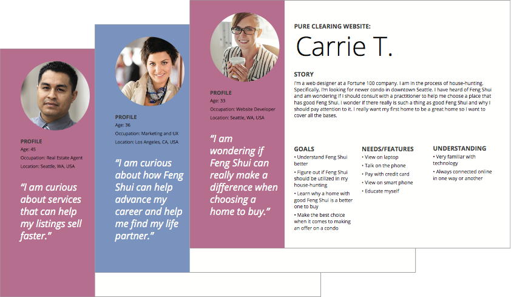
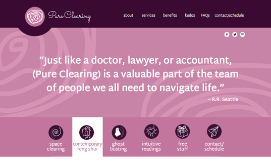

Pure Clearing provides contemporary Feng Shui, space clearing, ghost-busting, and intuitive services. I am currently re-branding this business. The logo and color palette are settled and I am now re-doing the website. Stay tuned for changes.
Case Study/Solution
One of the biggest challenges for this type of business is communicating credibility. In doing research on other people in this type of business much of the competition had identities that seemed very new agey. They had dated graphics or the sites were not mobile friendly. Some of the sites provided too much to read.
Pure Clearing needed to be simple, approachable, and friendly while educating the user in a light-hearted manner. To achieve these objectives I wanted a friendly font and a loose but calm graphic feel .

Research
I used Google Docs to create a user survey and gathered data that helped me to develop likely customers for Pure Clearing. I created personas based on the survey data and finalized those personas in Illustrator.
Rough Wireframes
I started with some very rough sketches before going to Low Fidelity Wireframes.
User Flows
Some of the user flows I created using draw.io..

Iconongraphy
High Fidelity Wireframes
On the home page I used a client’s testimonial to convey credibility early in the user’s experience. The iconographic menu helps add personality and is more fun to look at than plain words. I am currently redesigning this website based on the new brand.

I will be doing further user testing and research to find the best ways that this business can provide value to its customers. A blog, free gifts and resources, more testimonials, FAQs, social links, an online scheduler, and email marketing are all in the works.